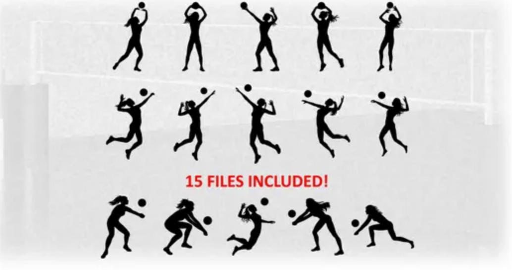

Want to improve your volleyball skills? These tutorials explain three important parts of the game. After watching them, check out the game video to see how players use those skills together.

Serving starts every rally. This tutorial can help you learn how to send the ball over the net with more control. Watch the serving tutorial
A good pass gives your team a chance to set up an attack. This tutorial shows how to use your arms and position your body to control the ball. Watch the passing tutorial
Hitting is an exciting way to finish a play. This tutorial explains the approach, jump, and arm swing used to attack the ball. Watch the hitting tutorial to learn more. Also click on the other videos to find out how to do each role in volleyball.
Here is a video of our team putting these skills together during a game! Watch Eastside Prep volleyball in our most recent match!